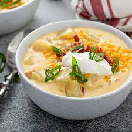

Baked Potato Soup

Perfect for a chilly fall day or cold winter day, this baked potato soup is packed with flavor.
This receipe is pretty customizable as far as seasonings/vegetables.
Ingredients
- 4 baked potatoes
- 2 cups chicken broth
- 5 cups milk
- 1 cup sour cream
- 1 half onion, diced
- 2 medium carrots, diced
- 1 stalk celery
- minced garlic to taste
- salt to taste
- pepper to taste
- dash of cayenne pepper (optional)
- 2 tablespoons of bacon grease (optional)
- 8 strips of bacon, cooked and crumbled (optional)
- 1 cup cheese of choice, shredded.
Steps
- Microwave the potatoes to a medium firmness. Set to side to let cool while prepping the rest of ingredients.
- Meanwhile, cook bacon on medium heat until crisp. Let cool and crumble. Set aside 2 tablespoons of grease for next step.
- In the pot on medium heat, sautee onions, carrots, and celery until slightly translucent. Add garlic for last minute of sauteeing.
- Cut potatoes into medium sized squares and set aside.
- Add broth to pot and gently stir in milk. Add potatoes and bring to a boil, stirring frequently.
Season to taste with salt, pepper, and seasoings of choice.
- Reduce heat and simmer 10 minutes. Add sour cream, bacon and cheese. Continue cooking, stirring frequently until cheese is melted.